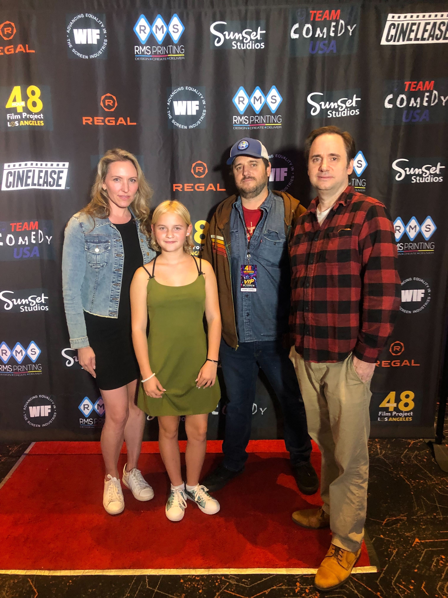
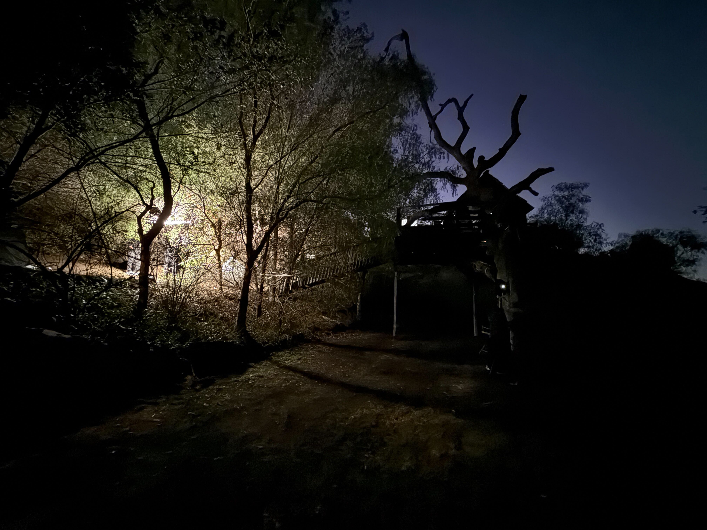
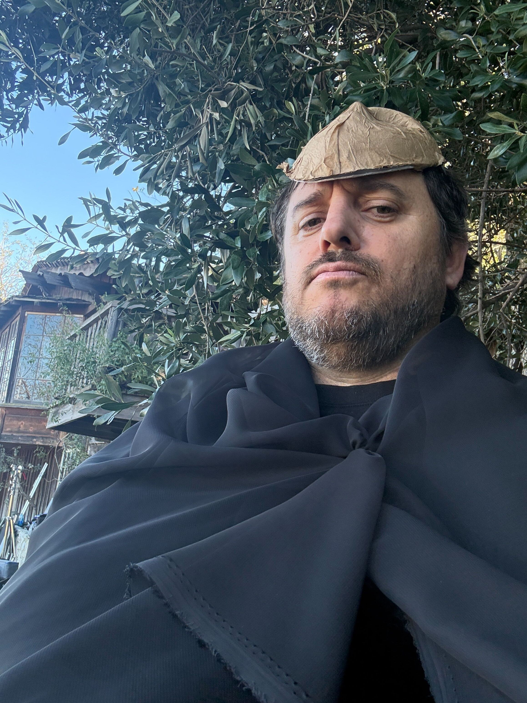

The Road To Cannes
Fat Happy Baby Productions Does Cannes
Field Report · November 2026
Shane Campbell is the writer-director behind Fat Happy Baby Productions. This weekend he is not directing. He is standing in head-to-toe black on somebody else's set, dressed as a witch between hauling setup and a Walmart run.
The somebody else is M.'s group, a twelve-person indie-movie-making outfit and a past LA 48 finisher. They have entered 'To Cannes', the 48 hour sprint whose top three films advance to the Cannes Film Festival, and they drafted Shane, FHBP's creative heavy, to give them that original flavor he is so famous for. Shane and the M crew have circled each other on The 48 circuit for years. Fat Happy Baby's own most recent entry, GLP1 Elixer, made it all the way up to Group A but was snubbed out of the Finals. Sean Dog found him between setups in a witch costume, having just been sent to restock the craft table.
SD: Working on a real movie shoot. With winning team. How does it feel?
SC: Too legit to be authentic.
SD: Everyone here is dressed in black, including you.
SC: Fat Happy Baby is going to make all staff wear black from now on. We do not know why. It seems more professional.

SD: You say staff. This team has twelve members. FHBP has?
SC: Just you, really. Sometimes the college kids next door help. I do not count my daughter and the dog, because they will not get fed unless they help.
SD: So if you win here, you go to Cannes.
SC: I always new FHBP was an elite shop.
SD: Has Cannes gotten so big that it is really just the new sellout to the majors?
SC: Its a small festival, they will let us in just for our clout.
SD: How do you feel about going from Director, Producer, Writer, to background extra and gofer?
SC: …no response…

SD: Since you are involved, will there be a child and a dog in the movie?
SC: There has to be. A Fat Happy Baby film is not a film without a kid going diva and a dog taking a dump on camera. I pitched it opening morning. M. said their group does not "do" that. I said that is exactly why you have only ever placed second.
SD: Follow up. What about the gray backdrop sheets? I do not see any here.
SC: I clocked that the second I walked in. No sheets. No steaming. But luckily I brought them. Fat Happy Baby does not do 3rd place.
SD: Any fold-out tables?
SC: Craft services has three, and nobody is editing on a single one. FHBP can make any genre of movie with a fold out picnic table. These people use tables to hold food. Not judging, but amateur, no?
SD: Does a limb come off? A head?
SC: Not on this one. I asked. M. said the genre is drama. I said every genre is improved by a head coming off, including drama, especially drama. She has not responded. But after this take I will definately ask again.
SD: This team is called the M. Group, but you keep saying the Ukrainians.
SC: FHBP does not stand on circumstance. They are the Ukrainian subsidiary in LA. I hope they join our mailing list and help me keep the Canadian Contingent in check.
SD: A second ago you said you don't place 3rd, does that mean you won 2nd or 1st?
SC: Let us move to the next question.

SD: What have they had you do so far?
SC: I was sent to Walmart to find vintaged windchimes. Not sure if they are for the movie or just the director needed them for her house. I know what its like to direct. They don't like questions. Fat Happy Baby is all gass no breaks.
SD: Last one. If M. Group wins and goes to Cannes, what do you get?
SC: Background Witch. Witch 2 if someone quits.
— SD